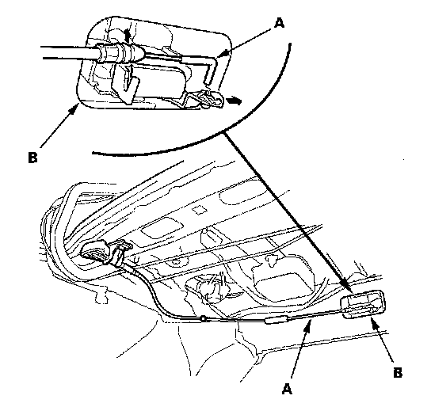
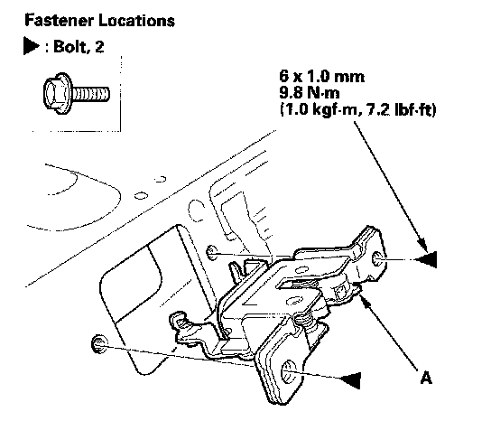

Seat Latch: Service and Repair
Rear Seat-back Latch ReplacementFold Down Rear Seat/Split Fold Down Rear Seat
NOTE: Take care not to bend or scratch the interior trim.
1. Remove the rear shelf.

2. From the trunk, disconnect the seat-back release cable (A) from the seat-back latch (B).

3. Remove the bolts, then remove the seat-back latch (A).
4. Install the latch in the reverse order of removal, and note these items:
- Make sure the release cable is connected securely.
- Make sure the seat-back locks securely and unlocks properly.